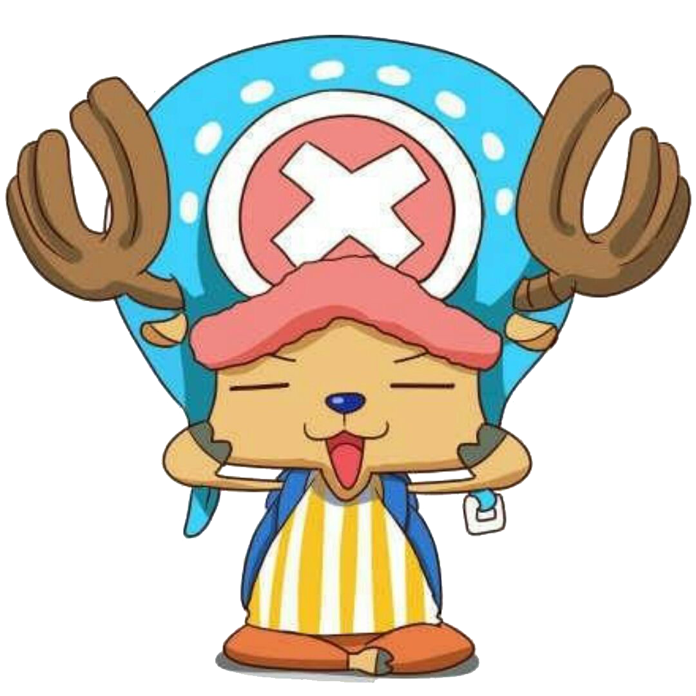
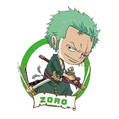

About Skill
2016,第一次接触是C语言,在拥挤的实验室
2018四月份开始学习51单片机,在喧闹的寝室
暑假,学习VB/VBS语言,在炎热的夏天
七月份,打开了Python大门,人生苦短,我用Python
大三上,开始攻克Python爬虫和Python Web
在校期间,接触到了Andriod开发
下半年,学习了Java基础
寒假,开始系统的学习H5,CSS3,JS
大三下,开始攻克Linux系统及服务器端脚本语言
现在正在学习容器技术Docker
而未来...
想成为一名Python后端工程师
-
2016-Now
浙江树人大学
专业：通信工程
在风气不佳的考试战场中险些挂科(^_^)
最喜欢的科目是LOL
现在正在愁于毕业实习
-
2017.3-2017.4
学校周边
传单分发员
没学到什么东西
赚点外快
-
2018.7-2018.8
小型餐馆
递菜服务员
攒钱买平板
体会到了劳动带来的艰辛
收获颇多
-
Future
...
Something Of Hobby
-

PS
制作图标&更换背景
PS/制作图标&更换背景
对于photoshop的热爱一部分来自于对网页制作的需要,刚开始学PS时只是为了P图恶搞, 但是,当我接触到网页制作时,不得不掌握PS的基础知识和P图能力.
比较喜欢制作网站的图标及网站的背景,让每一张图片都变得完美是我的目标。
-
MUSIC
电音&钢琴&轻音乐
MUSIC/电音&钢琴&轻音乐
每天泡在网易云的欧美电音中,随着音乐手舞足蹈,释放这个年纪该有的青春和激情. 钢琴是我最爱的乐器,只因为它弹出来的音乐胜过任何一种其他乐器.
不知从什么时候开始,我爱上了无词的轻音乐,每次听的时候总是能感受到它想要传达的情感, 并深陷其中......
-

TV drama
古装剧&喜剧
TV drama/古装剧&喜剧
和大多数人一样喜欢刷剧,而我喜欢捧着平板刷剧,特别是魔幻仙侠类的古装剧,剧情的跌宕起伏, 和人物之间的情感变化,都无不吸引着每一个刷剧的观众.
每一部剧的结局总是不尽相同,而我倾向于结局美好的电视剧, 只因这样的结局带给每一个刷剧的人满足感.